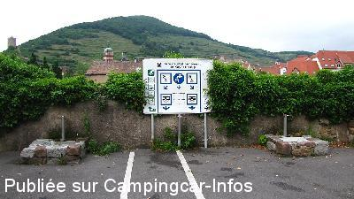
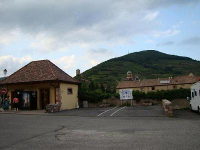
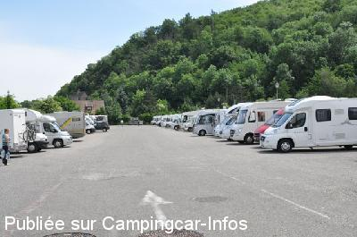
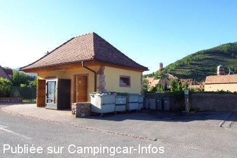

ASN = Aire de services avec stationnement nuit possible de :
KAYSERSBERG
(N° 695)
Accès/adresse :
Place de l'Erlenbad
68240 KAYSERSBERG
68240 KAYSERSBERG
Latitude : (Nord) 48.13616° Décimaux ou 48° 8′ 10′′
Longitude : (Est) 7.26191° Décimaux ou 7° 15′ 42′′
Tarif : 2015
Stationnement C-C : 8 €
Paiement par horodateur
Services gratuits
Wifi, voir avec l'Office du tourisme
Type de borne : Plateforme
Services :


Un boulanger passe le matin
Aire de pique-nique
Accès internet : demander le code à l'Office du Tourisme
Autres informations :
Ouvert toute l'année
50 emplacements goudronnés, non éclairés, clôturés, sans ombre, un peu en pente, accessibles pendant le marché de Noël
Tél mairie : +33(0)389 781 111
http://www.kaysersberg.com
NOTA : Conditions d'utilisation spéciales pendant les 4 week-ends du Marché de Noël et durant la journée, pas de changement pour y passer la nuit.

Le 21/07/2013 par a&b

Le 26/08/2012 par PASCAL

Le 08/06/2012 par Patrick

Le 09/08/2005 par gerard.dubois41
de
michelene73
le 22/12/2014 :
Pour le marché de noël, la commune à ouvert le stade et permis aux camping car de se garer. Pour 7 €, service compris et personnel super sympath! Merci à Kaysersberg d'avoir compris que les camping caristes n'étaient pas des voleurs de poule.
Pour le marché de noël, la commune à ouvert le stade et permis aux camping car de se garer. Pour 7 €, service compris et personnel super sympath! Merci à Kaysersberg d'avoir compris que les camping caristes n'étaient pas des voleurs de poule.
de
mirol49
le 09/10/2014 :
De passage mi-septembre. Effectivement un peu bruyante mais il y a pire et pour une nuit on fait avec. Pas bien d'autre possibilité de stationner pas trop loin pour visiter la ville.
De passage mi-septembre. Effectivement un peu bruyante mais il y a pire et pour une nuit on fait avec. Pas bien d'autre possibilité de stationner pas trop loin pour visiter la ville.
de
Frédo40
le 18/08/2014 :
De passage le 06.08, très beau village alsacien.
Celui de Riquewihr, à 5 km est encore plus beau, à faire.
L'aire est bien placée pour la visite du village, les services son fonctionnel, à cette saison elle est un peu "chargée" et la route à 50m est certes un peu bruyante mais pour une nuit ça va trés bien.
De passage le 06.08, très beau village alsacien.
Celui de Riquewihr, à 5 km est encore plus beau, à faire.
L'aire est bien placée pour la visite du village, les services son fonctionnel, à cette saison elle est un peu "chargée" et la route à 50m est certes un peu bruyante mais pour une nuit ça va trés bien.
de
Pierre88
le 05/07/2014 :
Bonjour,
De passage pour la nuit du 29/06, ok aire très bien située pour visiter le centre ville, mais très bruyante avec la route très passante à proximité. Il y a à quelques kilomètres des possibilités de nuit beaucoup plus calme.
Bonjour,
De passage pour la nuit du 29/06, ok aire très bien située pour visiter le centre ville, mais très bruyante avec la route très passante à proximité. Il y a à quelques kilomètres des possibilités de nuit beaucoup plus calme.
de
virey
le 09/05/2014 :
avons passez la nuit du 28/04/14 avec des amis bordelais, aire tres agréables merci a la municipalite et le village encore ouah!
avons passez la nuit du 28/04/14 avec des amis bordelais, aire tres agréables merci a la municipalite et le village encore ouah!
de
Nath § Did
le 27/12/2013 :
Avons passés la nuit du réveillon de Noël sur cette aire, bien située, proche du centre. L'aire était quasiment complète. Dommage que le lendemain matin, malgré le payement des 7 euros requis, nous avons eu la désagréable surprise de trouver les eaux coupées et les sanitaires fermés. Le tout devait ouvrir pour 9h, mais en ce jour férié, ça n'a pas été le cas et aucun avis n'en informait les camping caristes.
Avons passés la nuit du réveillon de Noël sur cette aire, bien située, proche du centre. L'aire était quasiment complète. Dommage que le lendemain matin, malgré le payement des 7 euros requis, nous avons eu la désagréable surprise de trouver les eaux coupées et les sanitaires fermés. Le tout devait ouvrir pour 9h, mais en ce jour férié, ça n'a pas été le cas et aucun avis n'en informait les camping caristes.
de
Géanne
le 29/08/2013 :
Pause déjeuner le 20 juillet 2013.
Bien situé pour la visite du village,mais en plein soleil et assez bruyant.pas envie d'y rester la nuit
Pause déjeuner le 20 juillet 2013.
Bien situé pour la visite du village,mais en plein soleil et assez bruyant.pas envie d'y rester la nuit
de
Franck
le 05/08/2013 :
Arrivés tard dans la soirée fin juillet 2013, l'aire etait blindée( certains prennent les aires pour des camping a emplacements et hésitent pas a s'etaller sans penser aux copains). Obligé de stationner sur le parking bus/pl juste a coté ( heureusement il y avait de la place!). ATTENTION: le robinet de remplissage eau propre est enorme , il faut un gros embout ( que j'avais pas!!) mais les robinets eau propre et rincage cassette sont bien séparés
Arrivés tard dans la soirée fin juillet 2013, l'aire etait blindée( certains prennent les aires pour des camping a emplacements et hésitent pas a s'etaller sans penser aux copains). Obligé de stationner sur le parking bus/pl juste a coté ( heureusement il y avait de la place!). ATTENTION: le robinet de remplissage eau propre est enorme , il faut un gros embout ( que j'avais pas!!) mais les robinets eau propre et rincage cassette sont bien séparés
de
Bernard Cousinié
le 02/08/2013 :
De passage en juin 2013 pendant la canicule ...
Dommage qu'il faille payer aussi 7 euros uniquement pour visiter la ville (2 à 3 heures)!!!! Du coup nous y avons passé la nuit !
Un peu bruyant la nuit (au bord de la nationale)
De passage en juin 2013 pendant la canicule ...
Dommage qu'il faille payer aussi 7 euros uniquement pour visiter la ville (2 à 3 heures)!!!! Du coup nous y avons passé la nuit !
Un peu bruyant la nuit (au bord de la nationale)
de
a&b
le 21/07/2013 :
nuit 10,6,2013
immense espace pour la commodité de l'cc Français - garée sur un large - se garer sur place pour les bus 8 CC, WC près de 10 heures du matin?
services payants de nuit, gratuitement! nuit tranquille
une belle ville, mais tout fermé
Merci équipe Camping Car, merci Adria camping-car
nuit 10,6,2013
immense espace pour la commodité de l'cc Français - garée sur un large - se garer sur place pour les bus 8 CC, WC près de 10 heures du matin?
services payants de nuit, gratuitement! nuit tranquille
une belle ville, mais tout fermé
Merci équipe Camping Car, merci Adria camping-car
de
Gil
le 04/04/2013 :
Bel emplacement vaste avec les services adéquats mais nous avons préféré loger au camping municipal un peu plus haut (voir site de la ville);
camping très propre et très agréable avec parcelles herbeuse de très bon aspect, sanitaires impeccables et tarif convenable
Bel emplacement vaste avec les services adéquats mais nous avons préféré loger au camping municipal un peu plus haut (voir site de la ville);
camping très propre et très agréable avec parcelles herbeuse de très bon aspect, sanitaires impeccables et tarif convenable
de
Patrick
le 08/06/2012 :
De passage pendant le week end de pentecôte nous avons trouvé cette aire bien occupée par nos camarades camping cariste.Cet emplacement est bien situé,trés bien entretenu, domage que les toilettes soient fermées de 19H à 8H. Les places se libérent avant 10h. La proximité du village permet de se promener en toute tranquilité. A conseiller
De passage pendant le week end de pentecôte nous avons trouvé cette aire bien occupée par nos camarades camping cariste.Cet emplacement est bien situé,trés bien entretenu, domage que les toilettes soient fermées de 19H à 8H. Les places se libérent avant 10h. La proximité du village permet de se promener en toute tranquilité. A conseiller
de
Bernard73
le 04/05/2012 :
De passage le 27 Avril. Aire comble idem pour le parking des bus. Donc nous sommes montés au col du bonhomme
De passage le 27 Avril. Aire comble idem pour le parking des bus. Donc nous sommes montés au col du bonhomme
de
ladaou
le 30/08/2010 :
Aire bien faite pour les services, par contre, c'est souvent overbooké au niveau stationnement, il faut vraiment aimer la foule, car l'aire est pourtant immense. J'ai finalement préféré des aires "France-Passion", il y en a plusieurs très proches, celle que l'on a utilisé (à l'aller et au retour de notre voyage en Belgique) était en plein milieu des vignes, sans aucun bruit.
Aire bien faite pour les services, par contre, c'est souvent overbooké au niveau stationnement, il faut vraiment aimer la foule, car l'aire est pourtant immense. J'ai finalement préféré des aires "France-Passion", il y en a plusieurs très proches, celle que l'on a utilisé (à l'aller et au retour de notre voyage en Belgique) était en plein milieu des vignes, sans aucun bruit.